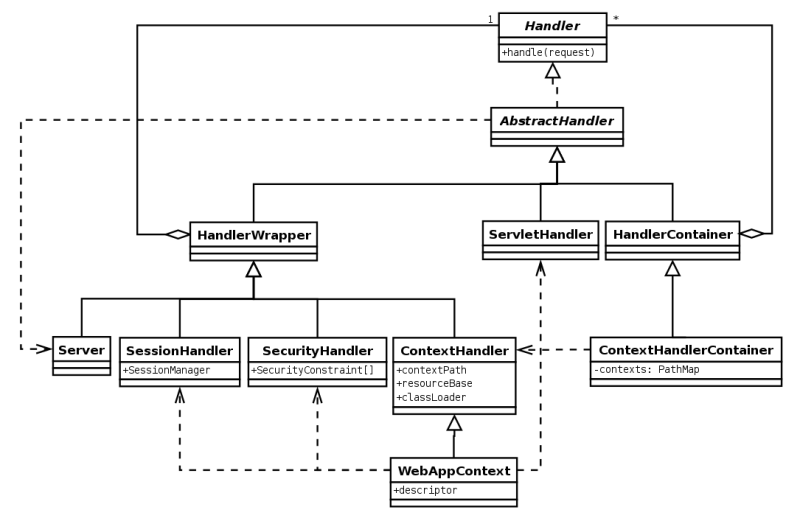
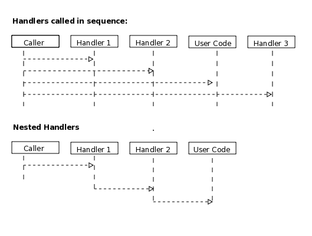
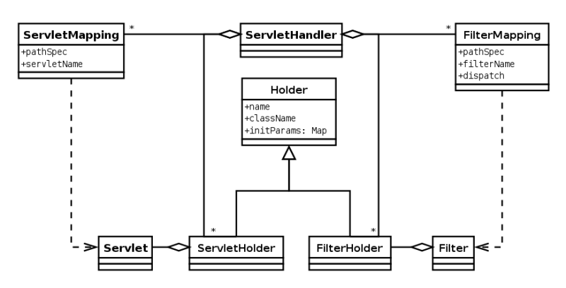
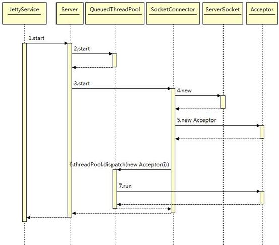

Jetty笔记
核心组成部分
- Server
- Connector
- Handler
- ThreadPool
- LifeCycle
LifeCycle
start();
stop();
- 管理server对象的生命周期
- Connector, Handler, ThreadPool都实现了LifeCycle接口
- LifeCycle的监听使用了观察者模式
Connector
- 接受TCP连接
- 用配置的ConnectionFactory创建Connection，和连接绑定
- 可配置多个ConnectionFactory，链式调用，分别完成各自一层的工作，比如：
- ProxyConnectionFactory：处理Proxy协议
- SslConnectionFactory：SSL加密解密
- HttpConnectionFactory：处理实际的HTTP请求
- ProxyConnectionFactory：处理Proxy协议
Handler

- Jetty用一个Handler模型就完成了请求在整个server的不同层级的处理，这个是Jetty保持轻量和容易扩展的原因，这里说一下它的设计模式。
- HandlerWrapper：形式上是装饰者模式，使用方式上是责任链模式
- 装饰者模式 Decorator：实现对所包装对象在本层级的拦截。比如，SessionHandler处理Session，SecurityHandler处理安全验证后，再调用被包装Handler的handle()
- 责任链模式 Chain of Responsibility：已经提到过，调用被包装Handler的handle()，实现责任链
- 装饰者模式 Decorator：实现对所包装对象在本层级的拦截。比如，SessionHandler处理Session，SecurityHandler处理安全验证后，再调用被包装Handler的handle()
- HandlerContainer：组合模式 Composite，树形结构
- 模板方法 Template Method：比如ScopedHandler.doScope()，更清晰的向使用者阐述类的职责
- 门面模式 Facade：Context相关类，限制暴露方法的范围
- HandlerWrapper：形式上是装饰者模式，使用方式上是责任链模式
- Handler风格分类：
- 协调型，路由请求到其它Handler（HandlerCollection, ContextHandlerCollection）
- 过滤型，拦截修改到其它Handler的请求（HandlerWrapper, SessionHandler, ContextHandler）
- 处理型，处理请求，生成响应（StaticHandler, ServletHandler）
- 协调型，路由请求到其它Handler（HandlerCollection, ContextHandlerCollection）
- 调用方式：

- 顺序调用，代表：HandlerCollection
- 嵌套调用，代表：HandlerWrapper
- 顺序调用，代表：HandlerCollection
ServletHandler

- ServletHandler持有多个FilterHolder和ServletHolder
- 作为Servlet容器，调用时先调用所有的Filter，再调用Servlet
Context
- 简单的说，分组环境变量
几个时序图
- Jetty启动

- 先启动线程池，再启动Handler，最后Connector。前者是处理后者的前提。
- 先启动线程池，再启动Handler，最后Connector。前者是处理后者的前提。
- Jetty建立连接
 - Jetty处理连接

- 注意Request/Response是在什么地方创建的
- 注意Request/Response是在什么地方创建的